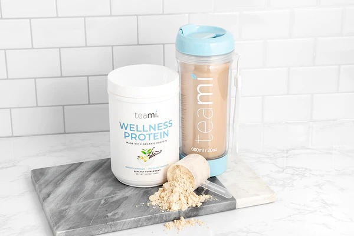
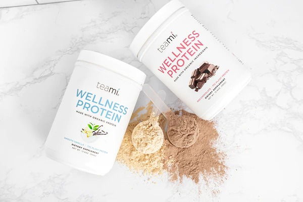
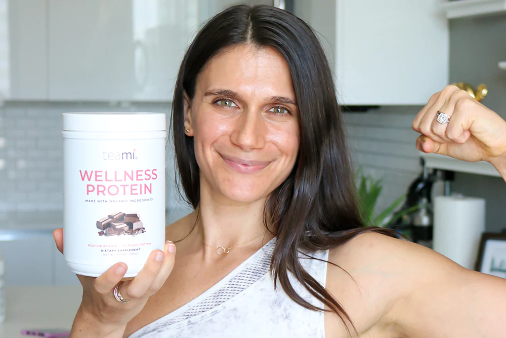

Serial No. |
Image |
Facts |
1 |
 |
1. Plant-Based Protein Powder is Easily Absorbed By the Body
Plant protein powder is a whole lot easier to break down, process and be absorbed by the body when compared to whey protein powders. This is especially true for sprouted plant protein.
Sprouted vegan protein powders are more bioavailable. This means that your body can break it down and use it better for cell growth and to repair muscle tissue. This is great news if you suffer from food intolerances, bloating, IBS, and a slow metabolism.
|
2 |
 |
Most Protein Powders Are a Great Source of Iron
Red meat will always be a great source of iron, but pea protein powder is just as effective, if not more so. One serving of pea protein powder contains 35% of your daily requirement for iron. In comparison, the same serving size of animal-based protein contains 0% of your daily iron requirement.
This means you'll need to eat more red meat in order to meet the same iron intake. In addition to this, you're also getting in added protein, along with iron when consuming pea protein powder. Pea protein can be easily incorporated into your diet as a protein powder -- just like any other whey, animal-based protein powder.
|
3 |
 |
Plant Protein Powder Is Also a Source of Healthy Fats
Many forms of vegan protein powder double as a source of other essential micronutrients. One of these is healthy fats which are essential in the diet for the absorption of important vitamins and many other functions. A vegan protein powder that is made from coconut protein or contains coconut offers a dose of healthy fats with every serving.
The healthy saturated fats contained within vegan protein powder can also help to regulate your appetite and weight, control hormone levels, sugar levels, and digestion.
|
4 |
 |
Plant Protein Powder Can Keep You Fuller For Longer
Most plant-based protein powders are packed with tons of fiber. One of the greatest benefits of fiber is that it has the innate ability to keep you fuller for longer. Plant-based proteins contain both soluble and insoluble fiber -- this also assists in a healthy, working digestive system.
Many vegan protein powders can actually be used as a meal replacement option because of their satiating nature. This is great news for people looking to lose a little weight, while not giving in to cravings due to low sugar levels
|